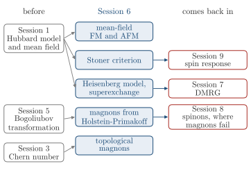

What happens on the repulsive side of the Hubbard model, and what are the excitations of the magnets that it gives? In this session we need three things from before. The first is the Hubbard model (1.7) and its first mean-field treatment in Section 1.14, with the magnetization \(m\) and the Mott gap. That treatment only showed that magnetism is a symmetry-broken mean-field state. The second is Session 5, where the same Hubbard Hamiltonian with an attractive interaction gave a superconductor, and where the Bogoliubov-de Gennes Hamiltonian of Section 5.8 mixed creation and annihilation operators. The third is the topology of bands of Session 3, with the Chern number (3.4), the bulk-boundary correspondence of Section 3.7 and the Haldane model of Section 3.10b.
In this session we will see the repulsive side of the same Hamiltonian, which gives magnetism. First, we will solve the magnetism of the Hubbard model numerically, and we will see that ferromagnetism and antiferromagnetism compete as two self-consistent solutions of the same Hamiltonian. Then we will find the value of the interaction above which magnetism appears, which is the Stoner criterion. This threshold is in the regime where mean-field theory stops being reliable. So after that we will leave mean field and derive the effective spin Hamiltonian of the strongly correlated limit, which is the Heisenberg model. After this we will ask about the excitations on top of a magnetically ordered state. These are magnons, the magnetic analogue of a phonon, and we will construct them with the Holstein-Primakoff transformation. Once magnons have a band structure, the Chern numbers, the Berry curvature and the chiral edge states of Session 3 and Session 4 apply to them too, and this gives topological magnon bands. All the magnets of this session break time-reversal symmetry. The quantum magnets that do not break it, with their spinons, are only previewed here.

- In Section 7.10 the Heisenberg chain is solved with DMRG, without any mean-field step.
- In Section 8.1 magnets that do not break time-reversal symmetry have spinons instead of magnons, and in Section 8.7 the Holstein-Primakoff expansion fails for them.
- In Section 9.5b the Stoner criterion comes back as a divergence of the spin response.